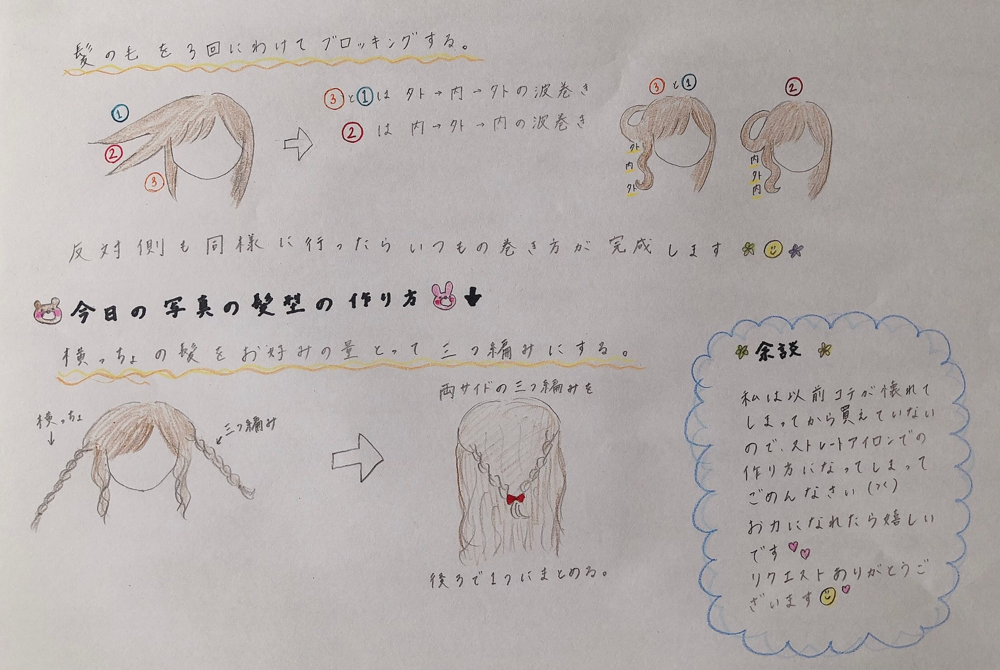

2020/0605Fri描いてみましたっ！弓木奈於
ページをクリックしてくださりありがとうございます☺️
乃木坂46 新4期生
京都府出身
弓木奈於（ゆみきなお）です₍₍( ´ ᵕ ` *)⁾⁾

色んな髪型をリクエストしてくださったので、
今日は私が先輩方に初めてご挨拶をさせていただいた時にしていた髪型をしてみました！
お辞儀をするので、横っちょが前に来ないように三つ編みをしました！
その方法↓

最近とても暑い日が続いていますね( ›_‹ )
扇風機が手放せない毎日です！
皆さんいかがお過ごしでしょうか？
私は見ての通り、日中常に火照っております。
すーぐ赤くなるのです(●･̆⍛･̆●)

ぱふを見せるスタイル。
---------- ｷﾘｶｴ ---------
❁質問へお返事させていただくコーナー❁
⚫︎学校の課題はすぐ終わらせる派でしたか？残っちゃう派でしたか？
残っちゃう派でした...！
でも最近は、やらないといけない事をいただいたらすぐにやるようにしています！！
よく忘れちゃう事が多いので、覚えているうちにやろう精神です！|•'-'•)و✧
⚫︎ 弓木ちゃんの好きなフルーツはなんですか？？
私フルーツ大好きです！⸜(´ ˘ `∗)⸝♡
昨日は甘夏を食べました！
一昨日はりんごを食べて、その前はブルーベリーとキウイも食べたかな☺︎
いちごが大好きで、弟と「どちらが先に冷蔵庫パンパンになるまでいちご買えるようになるのか！」って勝負しています（笑）
グレープフルーツも、桃も...全部大好きです！
⚫︎メイクするとき、1番こだわっているところは？ポイントはありますか？
私もまだまだ勉強、研究中です...！
お肌が強くないので、自分に合った下地を見つけます！ファンデーションは使わずに目の下の頑固なクマだけコンシーラーで隠します！
目がツンッとしているのですが、目尻に濃いアイシャドウを乗せると元々ある涙袋に被ってしまって「おや？」と言う状態になるので、今は目頭側だけにアイラインを引いています。（研究中...！）
目の下がピンクになりがちなので、ひどい時はコンシーラーで隠します！
全然参考にならないポイントですみません( ᐪᐤᐪ )
先輩方がブログや雑誌さんでご紹介していらっしゃるメイク道具を買って使ってみたりしています！
自分に合うメイクを探して奮闘中です！！( ›_‹ )
⚫︎ 遅くなっても見てくれてますか...？
はい！もちろんです！
コメントをしてくださりありがとうございます( *ˊᵕˋ ) ⁾⁾ ❁
⚫︎ もうすぐ女友達の誕生日なんですけど、20歳位の女の子はどんなものを貰うと嬉しいですか？
私だったらお手紙が嬉しいです！
物か...
お仕事でお疲れだったら、アイマスクとか...？部屋着とかですかね...？
プレゼントをあげたいなって気持ちだけで、とっても嬉しいと思います☺️
⚫︎兄弟では何をして遊ぶとかありますか？
羽子板や、UNO、坊主めくりや
外に遊びに行っていた時は、バトミントンや、ダルマさんが転んだ、鬼ごっこなどをしていました！☺︎
⚫︎クーラー派？扇風機派？それとも団扇派？
扇風機を使っています！
通学中や教室などでクーラーが一番効いている場所を探すの得意でした(ง ˙˘˙ )ว笑
⚫︎奈於ちゃんは肉か魚どちらが好きですか?
以前はお肉が大好きだったけど、今はお魚の方が好きです！
でもお肉も大好き...
(๑･﹃ ･๑)食いしん坊
⚫︎奈於ちゃんの好きなアンダー曲はなんですか？
7つに厳選して...！
日常、13日の金曜日、風船は生きている、ブランコ、新しい世界、君は僕と会わない方がよかったのかな、滑走路
でも本当に全て大好きです！
いつもシャッフルで全曲聴いています( *ˊᵕˋ ) ⁾⁾♪
⚫︎陸上部で最近全然部活もできなくて、遅くなってる気がします、、、だから応援してくださいっ！
中学生の時から仲良しな友達も陸上部で、毎日毎日本当に頑張っている姿をずっと応援していました！(* ॑ ॑* )⸝
お話を聞いて、毎日お家でも練習していらっしゃるのかなって思いました！
毎日本当にお疲れ様です✨
私も体力落ちてないかなって不安になります( ›_‹ )
これからも一緒に目標に向かって頑張りたいです！！
ずっとずっと応援しています☺️✨
⚫︎最近これはテンション上がったという出来事はありますか？
堀未央奈さんの写真集が届いた時です！！
ブログやarさんなどいつも拝見していて、配信でもメイクのポイントやコスメを丁寧にわかりやすく教えてくださっていて、写真集が届く日をワクワクで待っておりました☺︎
どの表情も言葉にならないほどお美しくて、透明感、二度見ではすまない程の美しいスタイル、美しい景色です。
笑顔で走っていらっしゃるお姿、ふとした表情、輪郭の線 ...全てが可愛くて美しいです！
憧れの女性です( *ˊᵕˋ ) ⁾⁾ ꙳✧˖
⚫︎裁縫は出来ますか?出来るなら何を作りたいですか?
最近はマスクを作りました！
昔自由研究で、うさぎのぬいぐるみを作りました☺︎
母がぬいぐるみのお洋服を作っていたり、昔は私たちのスカートを作ってくれたりしたので教えてもらいたいです(* ॑ ॑* )⸝
⚫︎好きなお洋服のブランドとかありますか？
one after another NICE CLAUPさん、merlotさん、JILLSTUARTさん、古着屋さんで買う事が多いです☺︎
⚫︎6月のイメージを教えてください！
カタツムリと紫陽花です！❁
ちなみに5月は鯉のぼり、7月は短冊、8月はスイカ！
小学校のカレンダーのイラストがこちらだった記憶( ｰ̀֊ｰ́ )✧
⚫︎ 一人焼肉した事ありますか?
まだ無いです！！
いつか勇気を出して行ってみたいです！
お肉食べたくなってきてしまった(๑•̀ •́)و✧
⚫︎ 行きたいところはありますか？
お出かけが出来るようになったら、
日向坂46さん 新3期生の森本茉莉ちゃんとフルーツを食べに行く約束をしています☺︎
欅坂46さん 新2期生の遠藤光莉ちゃんとはお出かけの約束をしています☺︎
とってもとても楽しみです⸜(* ॑ ॑* )⸝嬉
⚫︎ なおちゃんの好きな色はなんですか？
白、黒、紫、水色、エメラルドグリーン...このままだと全色言っちゃいそうですっ！( ૦هᐤ )! ｱﾌﾞﾅｶﾀ
⚫︎ 就活で凹んでいるので、励ましのコメント頂きたいです！
毎日本当にお疲れ様です( ›_‹ )✨
私も友達から本当に大変なお話を聞きました。
目標に向かって是非一緒に頑張りたいです( ›_‹ )！
ずっとずっと応援しています！✨
頑張ってください！！！届きますように！！！
⚫︎ 梅雨に入るけどなおちゃんは髪大丈夫？
:(´◦ ﹏ ◦｀): ｵｿﾛｼﾔ
⚫︎ 好きな服の系統などありますか？
いつも同じようなお洋服を選んでしまうので、最近は様々なお洋服が似合う女性になりたい！と普段着ない色物やズボンにも挑戦しています！☺︎
⚫︎ なおちゃんは辛い時、どのように乗り越えてきましたか？
私は本当に全然です！！
すごく辛い時、いつも家族や先生や友達やマネージャーさんや皆様やたくさんの方に助けていただきました！
泣いたりネガティブな顔や言葉を発したら迷惑かけちゃうって思って気持ちを押し込もうとしてしまうけど、どんなに押し込んでも消えない時があってそんな時は信頼できる周りの方に頼って、助けていただいた分私も強くなって恩返しできるように頑張らないとって思います！
お話ししてくださって、本当にありがとうございます。
とても大変なのに、私の体調までお気遣いしてくださるとても優しくて温かい方なんだなと思いました☺️✨
⚫︎タメ語と敬語どっちがいいですか、、？私は、なおちゃんより年下なんです、、
お話ししやすい方で...と言う気持ちでいっぱいなのですが、二択でお答えした方が良いですよね...！！
タメ口はどうでしょうか！？
どちらでもコメントをしてくださるお気持ちだけでとても嬉しいです✨
⚫︎人狼の「パン屋さん」って、どんな役職なんですか？
「美味しいパンが焼けましたよー！」と言う役職です！
⚫︎ どろかつとの面白エピソードは？？
欅坂46さん 新2期生 増本綺良ちゃんですね！☺︎
綺良ちゃんは、研修生として活動させていただいている時
いつも綺良ちゃんが「見て〜」と自分のおもしろ動画を送ってくれたり、動画で自分の面白い動きの箇所をトリミングして送ってくれたりして和ませてくれていました！
綺良ちゃんがいると一気に空間が温かくなるのです！私はその時間が大好きです☺️
⚫︎ なおちゃんはバスに乗っていましたか？
はい！
以前バスに乗っている時、バスの運転手さんが「本日もお疲れ様でした。ご乗車くださいましてありがとうございます。」とお言葉をくださったり、
ご乗車していらっしゃる方が乗り降りする際「こんばんは」と、降車ボタンの音が鳴ると「お知らせありがとうございます」
など運転してくださっている方からいただいたお言葉でとても心が温かくなりました☺️✨
バスの運転手の皆様に感謝の気持ちでいっぱいです！
⚫︎ 乃木坂工事中で1番印象的なシーンはどこですか？？
バナナマンさんに教えたい「私の一曲」で星野みなみさんがご紹介なさっているシーン☺︎
白石麻衣さんが催眠術で蛇を克服なさるのか...！？のシーン☺︎
内輪ウケものまねの全シーン☺︎
などなどたくさんです！！
最近だと、画面が固まったフリをしていらっしゃるシーンが大好きです☺️
先輩方のオススメを教えてくださっているのでとても幸せな気持ちで拝見しています✨
⚫︎ ナオタロスは、何してる時に幸せを感じる？
初めて呼んでいただきました！(⁎˃ᴗ˂⁎)嬉
私は、お仕事をさせていただいている時や、レッスンをさせていただいている時や、皆とお話ししている時です！✨
⚫︎研修生ツアーで印象的だったことは？
いっぱいあります！✨
では...
欅坂46さん 新2期生の大沼晶保ちゃんのエピソードをほんの少し発表しますね☺︎
レッスンの時に、晶保ちゃんがティラノ走り（ティラノサウルスのような走り方）を披露してくれたのですが、止まり場所が分からなかったようで
そのまま壁に突撃したのです！
心配と、驚きと、走り方の面白可愛いと、何だか初めての感情を経験しました（笑）
晶保ちゃんは本当に面白いのです！！
晶保ちゃんのブログを見て思い出したのですが、
研修生ツアーの〝胸キュンセリフ〟のコーナーの練習中
「死んだらあかん。あんたがいなくなったら生きていけへん。」
というセリフを披露してくれて
1人だけ設定が壮大でびっくりしました（笑）
出身地の静岡弁で披露してくれたのは
「うちっちさ〜、たとえさ、
サメに追いかけられても一緒にいようね」
『どういう状況！？』と思いました（笑）
どちらも練習中の時に聞かせてくれたセリフです！
私は、晶保ちゃんの沼に150㎝ほどはまっています(* ॑ ॑* )⸝♡
幸せを願ってくださったり、「好き」って言ってくださったり、ダジャレやなぞなぞを言ってくださったり、日々のことをお話ししてくださり本当にありがとうございます✨
学校や課題やお仕事毎日本当にお疲れ様です✨
いつもありがとうございます(*ˊᵕˋ*) ꙳✧
---------- ｷﾘｶｴ ---------
リクエストしていただいたポニーテール！
しかし...！！
ポニーテールの肝心なポニーのしっぽが見えないのです...！

もっと上達して、完璧なポニーのしっぽをお見せ出来るように頑張ります！
---------- ｷﾘｶｴ ---------
次は黒見ちゃん！| Ꙭ)وﾞ ㌧㌧
黒見ちゃんの前回のブログ、サマーキャンプのお話で「エガオ ガンバタ アキラメナカタ」が本当に感動しました。
頑張り屋さんの黒見ちゃんです✨
美佑ちゃんとの連絡、私スタンプ送るのです☺︎
みんなで連絡している時にもスタンプを送るのですが、
そしたら増本綺良ちゃんにいつも
「スペースとりすぎ！」って怒られるの
一個しか送ってないのに！
( ˙³˙)( ˙³˙)( ˙³˙)

今週も素敵な1週間になりますように...✨
本日もありがとうございました☺️
2020/0604Thu高校2年生です。松尾美佑
6月になりました！
夏がはじまりました。
今年はどんな夏になるのか、
まだ誰も想像できませんが、
笑顔で過ごしたいです。
開いて下さりありがとうございます。
千葉県出身、高校2年 16歳の
松尾美佑(まつおみゆ)です。
よろしくお願い致します。

【壁に小さな方々がいらっしゃいます】
瑠奈ちゃん、
扇風機忘れてた(ᯅ̈ )ごめっ。
電池ありがと☺︎
最近暑いから使うね！
オムレツ！食べたい食べる食べようね
夏になったということで、
ずっと話したかったお話をします。
の前に、
前回のブログを読んで下さった方へ。
前回の自己紹介で間違えて
"高校1年16歳"と書いてしまっていました。
本当にすみません。
大嘘です。ほんとは高校2年生です。
同い年〜とコメント下さった方、
私は本当は1個年上です。
一個下〜とコメント下さった方、
私は本当は同い年です。
しっかり2年生になったという事実を頭に叩き入れました。
気付いてコメントして下さった方、
ありがとうございます。
気をつけます。

【高校2年生の "2" 】
(少し前の写真です)
(いつのか分かりますか？)
(分かったら凄いです)
ずっと話したかった夏のお話をします。
2018年の夏に坂道合同オーディションを受けました。
三次審査でのダンス審査の課題曲が
『裸足でSummer』でした。
中学3年生の私は、
毎日どうしたんだと思うくらい主張激しく輝いてくる太陽を避けながら、
イヤホンから繰り返し流れてくる『裸足でSummer』と一緒に部活へ行っていました。
オーディションの日程が決まると 先輩に相談して一緒に小さな嘘を考えて貰い、
コーチに小さな嘘を付いて部活を休んで、
迷子になりながらオーディション会場に行って、
いつもの夏とは違いました。
『裸足でSummer』を聞いた時、凄く歌詞の言葉に共感しました。
誰も気ついていないけど、
あの時私から見えた夏の景色はいつもとは違った気がしました。
研修生ツアーの時、
『裸足でSummer』を披露させて頂きました。
本っ当に綺麗だったんです。
見に来て下さった皆さんがサビの時にタオルを一斉に上げて下さって、
忘れられない景色です。
『裸足でSummer』を聞くと心がギュッとして
不安や緊張やワクワクが混ざった、
14歳の夏の感覚に一瞬で戻ります。
大好きな曲です。

【前髪は旅に出ました】
凄くタコみたいですね。
こんなに髪が伸びたのは久しぶりです。
ちなみに私は元々 前髪はずっと伸ばしていて無かった人間でした。
未だに前髪の扱いに慣れていなくてよく困っています。
前髪が難しい日は基本上げています。
最後にお返事です。
✽山と海どちらが好きですか？
すっごく難しいです。
山も大好きですし綺麗な海も大好きです。
どっちもはダメですか？
✽リレーブログは今回で何回目?
8です！
"はちはちはち〜" が一時期口癖でした。
✽修学旅行は近畿のどこに行ったんですか？
（関西出身なので気になります。）
奈良県と京都府です！
嵐山が楽しかったです。
あと清水寺が印象に残っています。
また行きたい気持ちでいっぱいです。
✽DDの意味知ってる？
研修生の時の私のあだ名です。
誰でもじゃなくてみんなが大好きなのです。
✽リップの色めちゃくちゃ可愛いどこのですか？！
rom&ndさんの
JUICY LASTING TINT #06 FIGFIG
か
Innisfreeさんの
オイルティント 9番
どちらかです！
✽おうち時間何してますか？

【いちごサンド/マカロン】
少し前ですが。
私はお菓子作りが本当に下手で1人では出来ないので姉と一緒に作りました！
美味しかったです*ˊᵕˋ*
明日は〜
なお〜〜〜〜〜〜〜〜〜〜〜〜〜〜〜
なお〜の使うスタンプが面白可愛くて好きです。
私は最近スタンプの代わりに自分で絵を書いて送っています☺︎
最後まで読んで下りありがとうございます。
5月は5の倍数の日がブログ担当で分かりやすかったですが、
6月は4と9の付く日が私のブログ担当の日です。
今月もよろしくお願い致します(ง ꙭ)ง
ミュウでした¨̮
2020/0603Wedお疲れ様です！不定期連載を語る林瑠奈です。
本日もお疲れ様です。
乃木坂46新4期生の林瑠奈です。
神奈川県出身高校2年生16歳
華咲くシックスティーンの林瑠奈です。
負けるなしょげるな林瑠奈、今日も1日頑張るな
(ピンポーン)


分厚く大きな雲で埋まった空は息苦しそうだ。
視覚から得られる情報は全体の90パーセント。
目の前に広がる景色も、毎日更新される感情も、
ほとんどが目に見えるものから生じている。
可視化された世界に敏感な僕たちは、それでいて目には見えないものを本当に見えないふりをする。
気づかないふりをする。
見なかったことにする。
心で見えるはずのものを見ることを僕たちはやめた。
そのくせ、都合のいいときはポケットからメガネを取り出すようなくらい簡単に
今度は見えていたふりをする。
正しい答えなんて初めから分かっているはずなのに、
その答えを回答用紙に埋めるだけでいいのに、
僕たちは刹那的な感情で間違ってしまう。
目に見えるものに囚われてはいけない。
林瑠奈、最近視力が落ちました。しょげ
...........................................................................
次回予告
次回に何を話すか決まらないので、コメントにて提案をお願いします。
明日はミュウちゃんです。
オムレツ食べようね
アディオス！！
2020/0602Tue花の喜び。佐藤璃果
こんにちは～︎︎︎︎︎☺︎
今日は6月2日火曜日。
ブログを開いて下さり、
ありがとうございます。
6月になりましたね！⋆̩☂︎*̣̩
いつもありがとうございます。
今月もよろしくお願いします。
新しい生活習慣になった人も多いかと
思いますが、体調に気をつけて下さいね。
乃木坂46 新4期生 岩手県出身
佐藤 璃果(さとう りか)です。

(いつも同じような写真なので近づいてみました☺︎)
前回のブログ更新後、日向坂46さん新3期生の森本茉莉ちゃんが連絡をくれて、
色々お話をしました！
とても嬉しかったです。
あ、｢育てたい｣と言われました。
あれ、まりぃちゃんより、私、年上...。
とても面白かったです☺︎

(左:森本茉莉 右:佐藤璃果 11月12日東京公演
日向坂46さん衣装。)
見た目が可愛らしくて、でも面白くて、
ダンスもお上手だなって見ていました。
研修生ツアーで披露した、
｢ドレミソラシド｣の2番の所で、見つめ合おう。と約束していたものの、時々忘れられて、しゅんとしましたが、目が合うとそれはもう嬉しくて。
思い出です。
最近の私出来事。~~~~~~~~~~~~~~~~~~
作ってみました。

紫と白とピンクと緑の組み合わせ、
良いですね。
ラベンダーの香りのディフューザーと、お花を詰めた瓶です！
*****************************************
前回、あまり出来なかった質問コーナーを主にしていきたいと思います！
素早く簡潔に答える。
~~~質問~~~
〇え！？ 璃果ちゃん背中から羽生えてない！？
初めて言われました！
空中飛行してみたい。
〇公共交通機関は電車派?バス派?
車です。電車やバスは滅多に使わないです！
〇一人焼肉した事ありますか?
無いです！環境があればしたい。お肉大好き。
〇見てきた中で1番好きな景色って何ですか？
地元の星空が一番かなと思います。
〇璃果ちゃんから見てカッコいい部活って何かな？
頑張ってる人はみんなカッコいいです。
〇都会きて岩手とのギャップで一番驚いた事は？
面積が小さいのにお店がいっぱいあって
濃い空間。
〇子供の頃にやっていた遊びがあったら教えてください。
マリオと雪遊び~！
カードゲームとか、色々です。
〇目玉焼きにはなにをかけますか？
そのままです。自然の味です。
〇46時間TVのリモート背景が募集されているんですけど、璃果ちゃんはどんな背景を使いたいですか？
〇46時間TV見たでー
イラスト募集してたから璃果ちゃん描くね^ ^
作ってくださるんですか、お優しい(; ;)
なんでも嬉しいです。綺麗なものや可愛いものだと喜びます。
〇何か動物を飼っていましたか？？
ハムスターのはるたくん。
〇サッカーで全国目指してるので一言ください！
お疲れ様です！
サッカーって凄いですよね。
私ボール蹴ろうとしたら蹴れなかった事があって、
凄いなって思います。
全国目指してるという気持ちが素敵です。
◯コテ派？アイロン派？
どっちも持ってます。
前髪は小型のストレートアイロンです。
〇モチベーションをあげる時は何をしますか？
音楽をかけます。
ソファーから立ち上がりたい時も
お風呂に入るのが面倒な時も
音楽をかけます。
〇爬虫類は好きですか？？
かえるすきです。
〇好きなフルーツはありますか？？
キウイ。
カリウムがいっぱい入ってるいるので！
〇夏になったらやりたいことはありますか？
流しそうめん。
クーラーの部屋にずっといる。
〇触角多めのポニテが見たいです(´；ω；｀)

素早く答えることが出来ないシリーズ
〇久保ちゃんの良さを語ってください！
謙虚で毎度ブログが丁寧で、
久保さんから出てくる言葉が美しくて、
歌も演技も素敵です。白くて、お顔が小さくて、お目目が大きくて、笑った顔が素敵です。
そして、新4期生加入が決まった際に、
岩手県出身の子がいる！と言ってくださったり、BRODY6月号さんが発売された際にも、
佐藤璃果ちゃんもいます。
とブログに書いて下さって、
気遣いができる方って本当に素敵だなと
ずっと感謝の気持ちを伝えたかったです。
なんだか恥ずかしくなってきました。
〇璃果ちゃんはボカロは好きですか？僕は初音さんの千本桜が好きです！
昔、よく聞いていました！
中学生の頃、HoneyWorksさんいっつも聞いてましたね。｢金曜日のおはよう｣とか
｢初恋の絵本｣とか。その辺りの世代です。
千本桜は吹奏楽部で演奏しました。
〇仲良くなりたい！話したい！っていう先輩はいますか？いたら教えてください！
皆様全員です！(๑⃙⃘˙꒳˙๑⃙⃘)
とくに
東北出身の鈴木絢音さん、久保史緒里さんと
ぜひお話してみたいです。
鈴木絢音さんもラジオで岩手の子が居ると言ってくださっていた、と聞いてとてもお優しい、、と思っていました。
鈴木絢音さんにも感謝の気持ちを伝えたいです！
高山一実さんともぜひ、お話してみたいです。トラペジウムが好きだからです( ˊ꒳ˋ )
でもやはり皆さんとお話したいなというのは欲張りでしょうか。
〇よくYouTube見てるんですけど好きなYouTuberとかオススメとかありますか？
美容関係の方の動画を
いつも見させて頂いています！
あとはお料理動画や、筋トレ動画、
ASMR(特に揚げ物)
沢山食べる人の動画、MV関係、
丁寧な暮らしをしている方のvlog
などなどです。( '-' )
*****************************************
そして遅ればせながら、
予約して、楽しみにしていた堀未央奈さん写真集を読ませて頂きました！
透明感、白さ、美しさ。食べる堀さんも素敵ですし、オシャレな堀さんも素敵でした( ˊ꒳ˋ ) ᐝ
色んな表情があって引き込まれました。どんなお洋服も着こなしていて、凄かったです！
幸せでした❁.
*****************************************
明日はるなぴです。
るなぴのTシャツコレクションが
見てみたいなぁと密かに思っています。
*****************************************
皆さんにとって今日が
素敵な一日になりますように。

またね。
#8 ๑ り か ๑